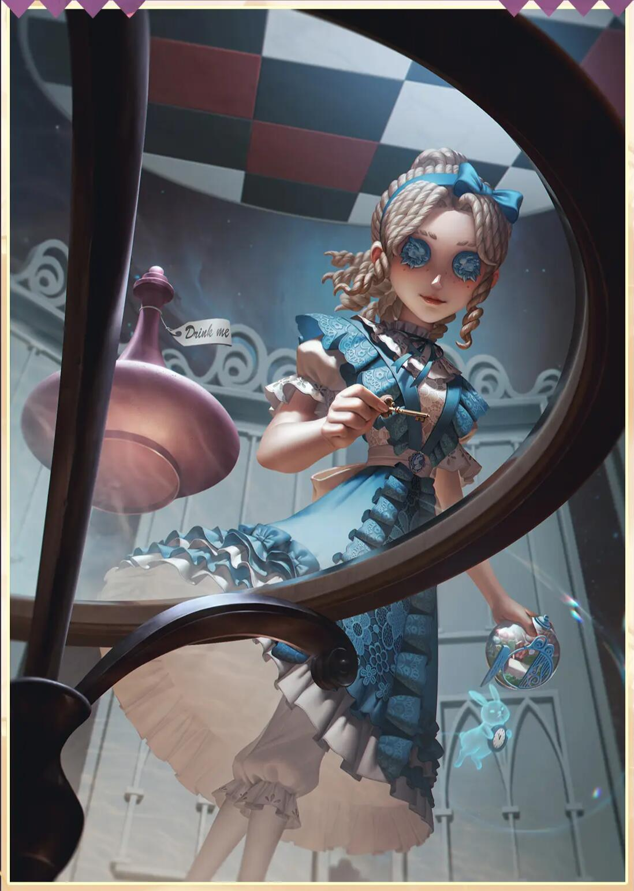

作者简介
爱丽丝·德罗斯曾是德罗斯家的大小姐，家道中落后流落街头，被人指着鼻子骂是害人精，因此有着不小的精神创伤，被送到疯人院治疗。她的经历塑造了她坚韧、聪敏、强耐受力的性格，但也因为病理原因和早年的药物测试，她的恐惧感较正常人弱，同时拥有超过常人的耐力。尽管她克服了过去的噩梦，但那些记忆并未消失。当她独自一人时，她会展现出严重的洁癖和强迫症，总是戴着手套，讨厌尖锐的声音。
随身携带相机，记者可以主动切换拍照模式生成不同视角下的幻影。
使用方式： 点击在身前生成幻影，长按蓄力后可在指定位置生成。
牵制视角：幻影会自动移动到未放下的木板一侧，监管者处于可被击中的位置时会自动放下木板，被幻影砸晕的监管者恢复速度增加30%，放下木板后幻影消失。当木板提前被放下幻影会自动消失。监管者摧毁被幻影放下的木板速度减少20%。幻影与队友的距离小于12米时，持续时间消耗速率增加50%。幻影存在过程中再次点击技能键可以主动使其消失。
救援视角：当有队友被放上狂欢之椅且距离记者小于25米时，幻影会自动移动到最近的狂欢之椅并救援队友。若狂欢之椅上的队友被其他求生者救下，幻影会提前消失。该视角下幻影距离监管者距离小于20米时，会向监管者显示轮廓。救援视角下无法在放有求生者的狂欢之椅附近8米内直接生成幻影。
幻影的基础移速、交互速度与求生者一致，可承受的伤害为一次普通攻击的伤害，但不会给监管者增加存在感，监管者攻击命中幻影的恢复速度增加30%。
记者与幻影其中一方受击后，双方同时获得受击加速效果，若幻影受击，记者的受击加速时间额外延长1秒。
当记者携带化险为夷天赋时，救援视角下的幻影救援成功后，同样会赋予被救援队友不会倒地的效果。记者与幻影的距离小于8米时，记者移动速度提高10%（幻影提高7%）。
记者讨厌金属的摩擦声，破译速度降低10%，幻影每次被击倒会使记者的破译速度额外降低3%，最多降低9%。少年时期的经历，让记者在面对恐惧时，有着异于常人的“勇敢”，在狂欢之椅上的起飞速度降低10%。
记者的幻影释放后，可以通过再次点击技能提前取消幻影进入冷却。幻影会受到监管者技能伤害影响，如26号守卫的炸弹、渔女的水汽、小提琴家的弦乐等，在面对多刀监管者的椅前博弈，尽可能贴近椅前释放幻影以免被技能打掉而丧失救援优势。如果记者想使用幻影完成扛刀操作，只有视角前方有板子或者有椅子的情况下才可以释放幻影，在扛刀时注意调整幻影出现位置及监管者出刀方向，能大大提升抗刀成功率。记者的幻影是瞬间出现，类似于机械师的玩偶，可以在监管者抬刀的时候使用幻影瞬间扛刀。如果记者救援时被提前拦截，可以在监管者后方释放幻影前去救援上椅求生者，此时监管者不得不面临二选一的境地，无论是拦截记者本体还是拦截幻影，另一方均可贴近椅前开展救援。记者在面向板区释放幻影时，幻影会根据初始生成位置的不同，选择靠近生成点木板一侧移动。